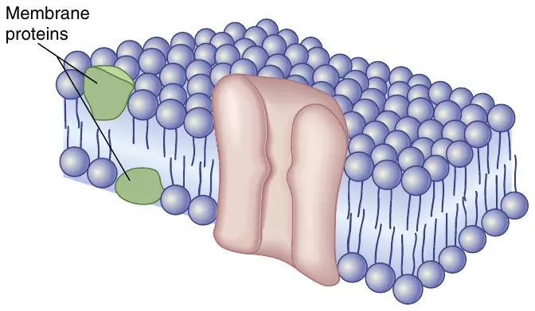

نسخه استخراجشده؛ ترجمه یا تأیید علمی انجام نشده است. وضعیت: captured
به مسیر بیحسی موضعی خوش آمدی. بیحسی مطمئن و بیدرد مهمترین مهارت روزانهی دندانپزشک است و این ماژول پایهی همهی تکنیکهایی است که بعد یاد میگیری.
برای مولر اول پایین معمولاً بلاک عصب آلوئولار تحتانی (IANB) میزنند: دارو کنار لینگولا، برآمدگی کوچکی روی سطح داخلی شاخهی عمودی فک پایین، و چند سانتیمتر دورتر از خود دندان تزریق میشود. ده دقیقه بعد فرز به عاج میرسد و بیمار دردی حس نمیکند. دارویی که به دندان نرسیده، چطور درد همان دندان را خاموش کرده است؟
پاسخ در ساختار نورون حسی است. پیام درد از پالپ به شکل ایمپالس الکتریکی در طول آکسون به سوی مغز میرود. در بلاک دارو کنار تنهی عصب نشسته، نه کنار دندان؛ مثل آبی روی فتیلهی روشن، ایمپالس تا همانجا میآید و خاموش میشود. بیمار هوشیار میماند، ولی دردی درک نمیکند.
در نورون حرکتی (وابران) جسم سلولی میان دندریتها و آکسون است و خودش بخشی از مسیر هدایت به شمار میآید.
آکسون استوانهای از آکسوپلاسم است که غشای عصب (axolemma) دورش را گرفته. تحریکپذیری و هدایت کار غشاست؛ جسم سلولی و آکسوپلاسم برای هدایت لازم نیستند. غشا حدود ۷۰ تا ۸۰ آنگستروم ضخامت دارد: دو لایهی چربی با پروتئینهایی که کانال، پمپ یا گیرندهاند. مقاومت الکتریکی غشای در حال استراحت حدود ۵۰ برابر مایع درون و بیرون سلول است؛ هنگام عبور ایمپالس، رسانایی آن حدود ۱۰۰ برابر میشود.

دور بسیاری از فیبرها غلاف میلین است: لایههای پیچیدهی سلول شوان، حدود ۷۵٪ چربی. میان هر دو سلول شوان شکافی به نام گره رانویه هست، هر ۰٫۵ تا ۳ میلیمتر، که غشا در آن مستقیم با مایع بیرون سلول تماس دارد. فیبرهای بیمیلین هم غلاف سلول شوان دارند، ولی چند فیبر در یک غلاف مشترکاند.
نکتهی طلایی: سد اصلی راه دارو غلاف بیرونی عصب، یعنی لایهی متراکم بیرونی اپینوریوم، نیست؛ پرینوریوم است. پرینوریوم دور فاسیکلهای بزرگتر ضخیمتر است و هرچه ضخیمتر، نفوذ دارو کندتر.